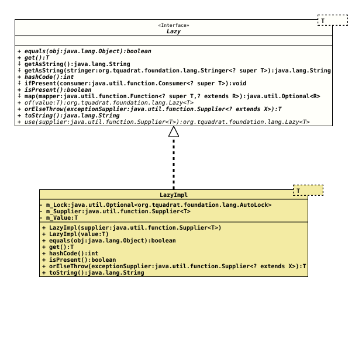

Interface Lazy<T>
- Type Parameters:
T- The type of the value for this instance ofLazy.
- All Known Implementing Classes:
LazyImpl
A holder for a lazy initialised object instance.
An instance of an implementation of this interface holds a value that
will be initialised by a call to the supplier (provided with the method
use(Supplier))
on a first call to
get().
The methods
getAsString()
and
getAsString(Stringer)
do call get() internally.
For special purposes, the method
of(Object)
creates an already initialised instance of Lazy.
Use
isPresent()
to avoid unnecessary initialisation.
As a lazy initialisation makes the value unpredictable, it is necessary
that the implementations of
equals(Object)
and
hashCode()
do force the initialisation.
toString()
will not force the initialisation.
This interface is not feasible for the lazy initialisation of connections to resources of any kind, as these will usually throw (checked) exceptions when problems arise, and usually these should be handled on one central location.
- Author:
- Thomas Thrien (thomas.thrien@tquadrat.org)
- Version:
- $Id: Lazy.java 1041 2022-12-18 22:14:52Z tquadrat $
- Since:
- 0.0.5
- UML Diagram
-

UML Diagram for "org.tquadrat.foundation.lang.Lazy"
{kind=link}
-
Method Summary
Modifier and TypeMethodDescriptionbooleanget()Returns the value for this instance ofLazy.default StringReturns the value for this instance ofLazyas its String representation.default StringgetAsString(Stringer<? super T> stringer) Returns the value for this instance ofLazyas a String that is generated by the providedStringer.inthashCode()default voidIf thisLazyinstance has been initialised already, the providedConsumerwill be executed; otherwise nothing happens.booleanChecks whether thisLazyinstance has been initialised already.default <R> Optional<R> If this instance ofLazyis initialised, the provided mapper function will be executed on the value.static <T> Lazy<T> of(T value) Creates a newLazyinstance that is already initialised.orElseThrow(Supplier<? extends X> exceptionSupplier) Returns the value or throws the exception that is created by the givenSupplierwhen not yet initialised.toString()static <T> Lazy<T> Creates a newLazyinstance that uses the given supplier to initialise.
-
Method Details
-
equals
-
get
-
getAsString
Returns the value for this instance of
Lazyas its String representation.Basically it will call the value's
toString()method.- Returns:
- The value as String.
-
getAsString
Returns the value for this instance ofLazyas a String that is generated by the providedStringer.- Note:
-
- As the value is allowed to be
null, it is necessary that the provided instance ofFunctioncan handlenullas a valid argument.
- As the value is allowed to be
- Parameters:
stringer- The function that creates the String from the value.- Returns:
- The value as String.
-
hashCode
-
ifPresent
-
isPresent
-
map
If this instance ofLazyis initialised, the provided mapper function will be executed on the value.- Type Parameters:
R- The result type for the mapper function.- Parameters:
mapper- The mapper function.- Returns:
- An instance of
Optionalthat holds the result for the mapping.
-
of
Creates a new
Lazyinstance that is already initialised.This allows to use
Lazyinstances also for cloneable objects, given thatTis either cloneable itself or immutable.- Type Parameters:
T- The type of the value for the new instance ofLazy.- Parameters:
value- The value; can benull.- Returns:
- The new instance.
- See Also:
-
orElseThrow
Returns the value or throws the exception that is created by the givenSupplierwhen not yet initialised.- Type Parameters:
X- The type of the implementation ofThrowable.- Parameters:
exceptionSupplier- The supplier for the exception to throw when the instance was not yet initialised.- Returns:
- The value.
- Throws:
X- When not initialised, the exception created by the given supplier will be thrown.
-
toString
-
use
Creates a newLazyinstance that uses the given supplier to initialise.- Type Parameters:
T- The type of the value for the new instance ofLazy.- Parameters:
supplier- The supplier that initialises the value for this instance on the first call toget().- Returns:
- The new instance.
-